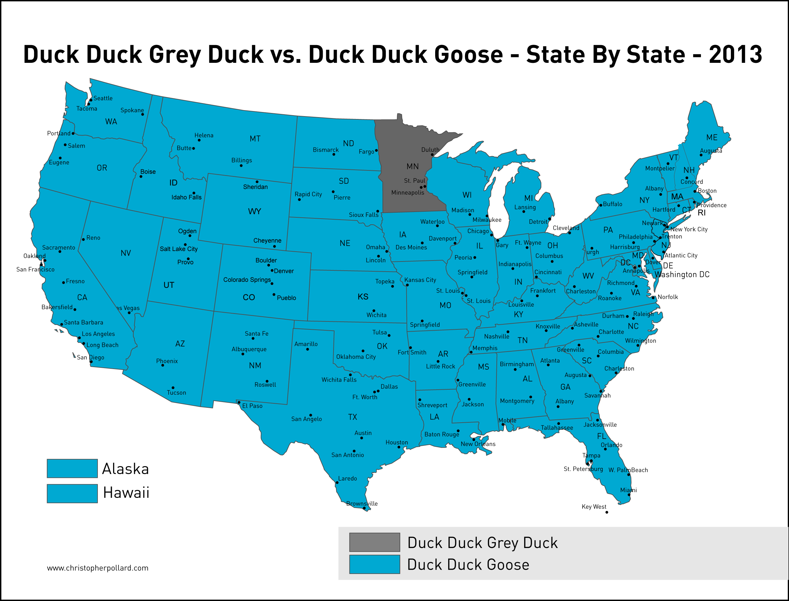

5 Things Only a Minnesota Raised Would Know
By Jake Derouin
1. Budging in line
Equivalent to: Cutting and Skipping in line.
HEY NO BUDGING! I remember complaining to my parents in 2nd grade about certain individuals in my class who were notoriously known throughout the class the budgers. Every time we would line up they would threaten to cause disorder and chaos in class by stepping out of line. I discovered that this was an MN regional word during my running camp in Boulder Colorado my senior year of high school.
2. Magic: Playground Game (Not the card game)
Equivalent to: Groundies, Gravel
Magic was a popular playground game for me growing up. The rules are like tag except the person who is "it" must close their eyes when they are not touching the ground (such as when on equipment). At any time the person who is it can shout "Magic!" and if anyone is touching in the group they would be "it".
3. Obo Shin Otten Totten: Singing and Clapping Game
Similar to "Down by the River Hanky Panky"
Lyrics: "Obo shin otten totten, nay nay, I am a horsey (Boom-boom-boom), itty bitty otten totten, obo shin otten totten, obo shin otten totten boom! one two three four five six seven eight nine ten!"
I played this game for years growing up usually when adults wanted us to kill time when I was at camps/sports practices. The game is simple. Everybody sits in a circle with one hand below the person on your left's hand, and the other hand above the person on your right's hand. Everyone then sings the song clapping the hand next to their's. The goal is to not get slapped by the person next to you on the lyric "TEN!". If you get slapped on "TEN" or fail to slap your partner's hand you leave the circle. During Track practice I tried to make a joke suggestion to my teammates that we should play Obo Shin Otten Totten to pass the time only for everyone to look at me asking "What in the world are you are talking about"!
4. Duck, Duck, Gray Duck!
Equivalent to: Duck, Duck, Goose!
Duck, Duck, Gray Duck's only difference from the game Duck, Duck, Goose is the name change which is a pretty odd one if you ask me. I grew up playing both versions!
5. MN Distance Triple: Cross Country Runners Doing Cross Country Skiing.
The "MN Distance Triple" of Cross Country, Nordic Ski, and Track is something very unique to MN.
As a runner in college, I am used to having 3 seasons of running (Outdoor Track, Indoor Track, and Cross Country). In High School however, nearly all of my teammates did Nordic skiing in the winter (I did not because I was swam in the winter). All over the state, many runners from Junior Varisty to top XC state finishers did Nordic Ski in the winter. I always thought it was kind of funny that towards the end of Cross Country season, the Nordic coaches would come in and give announcements to our team since the nordic team was comprised mainly of distance runners.